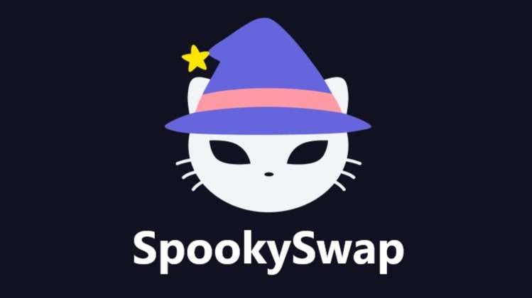

HTML Creator
SpookySwap stands out as the ultimate decentralized finance (DeFi) powerhouse built natively for the Sonic (formerly Fantom) network. Originally launched during the 2021 DeFi boom, this community-focused platform quickly grew from a simple token swapper into the primary liquidity hub for the entire ecosystem.
Operating as an automated market maker (AMM), SpookySwap eliminates the need for centralized banks, brokers, or order books. Instead, it relies on open-source, immutable smart contracts to execute peer-to-peer financial transactions instantly. By utilizing the incredible throughput and sub-cent transaction speeds of the Sonic network, SpookySwap offers global users a fast, affordable, and fully non-custodial alternative to congested networks like Ethereum.
Wrapped in a playful, ghost-themed aesthetic, SpookySwap blends community culture with serious, institutional-grade financial utilities.
🪙 The Platform Catalyst: The $BOO Token Architecture
Every structural layer of SpookySwap is connected through its native utility, rewards, and governance asset: BOO. Rather than acting as a standard inflationary token, BOO is engineered to capture direct value from the operational health and daily transaction volumes of the exchange.
Decentralized Governance: BOO serves as the fundamental voting mechanism for the SpookySwap DAO. Token holders propose and vote on crucial platform updates, strategic token listings, and developer grants.
The Power of Choice: Through the DAO, users use their BOO tokens to vote on which specific liquidity pools should receive higher emission distributions, letting the community decide where incentives flow.
Deflationary Supply Dynamics: BOO features a strictly capped maximum supply. This design prevents the hyper-inflationary reward traps that often plague lesser DeFi protocols.
📊 The Core Pillars: How SpookySwap Powers Decentralized Finance
SpookySwap provides an all-in-one financial dashboard designed for both casual retail traders and institutional yield-farmers. The platform's ecosystem is built across six core pillars:
1. Instant Token Swapping
Algorithmic Pricing: Users can instantly trade any native token directly out of their self-custody Web3 wallets using a constant-product market maker formula.
Minimal Slippage: The platform automatically routes trades through the deepest active liquidity paths, minimizing price impact even during large trades.
2. Advanced On-Chain Limit Orders
Order Book Convenience: Unlike basic AMMs that force users to accept whatever market price is currently active, SpookySwap offers fully decentralized limit orders.
Automated Execution: Traders can set their target price, deposit their funds into the contract, and go offline. The smart contract triggers the trade automatically only if the market reaches the designated price target.
3. Liquidity Provisioning (The Pools)
Market Making: Users can become active market makers by depositing equal dollar values of two different tokens into the public exchange pools.
spLP Receipts: In exchange for providing capital, the contract issues Spooky Liquidity Provider (spLP) tokens to the user's wallet to track their share of the pool.
Fee Accumulation: Every standard swap on the exchange carries a 0.20% trading fee. A significant 0.17% of that fee is funneled directly back into the pool, automatically buying more underlying tokens for the LPs and compounding their assets.
4. High-Yield Farming (The Farms)
Yield Stacking: LPs looking to supercharge their returns can move their spLP tokens over to the "Farms" section.
Passive Emission Streams: By locking these LP tokens into the farming smart contracts, users earn a steady stream of newly minted BOO tokens on top of the trading fees they are already generating.
5. The xBOO Buyback Vault
Deflationary Rewards: Users can stake their standard BOO tokens to receive xBOO tokens in return.
Market Buybacks: The remaining 0.03% of all trading fees collected by the DEX is automatically used to buy BOO tokens off the open market, which are then added directly into the xBOO vault.
Continuous Appreciation: Because the vault is constantly flooded with bought-back BOO, xBOO automatically grows in value relative to standard BOO over time. When users unstake, they withdraw more BOO than they originally put in.
6. Partner Staking Pools
Diversified Income: Once users hold xBOO, they can stake it again in secondary partner pools.
Ecosystem Incubation: This feature allows users to earn entirely new, trending tokens from emerging ecosystem protocols without needing to sell their core BOO positions.
📈 Capital Efficiency Evolved: SpookySwap V3 Concentrated Liquidity
To compete with top-tier modern protocols, SpookySwap evolved its architecture by implementing V3 Concentrated Liquidity. This feature completely changed how liquidity providers manage their capital risk.
Custom Price Brackets: In traditional V2 pools, capital is spread thin across an infinite price curve from zero to infinity. V3 allows LPs to choose a precise price range where their capital remains active.
Up to 4,000x Efficiency: By focusing liquidity where the vast majority of daily trading actually occurs, LPs can generate the same amount of fee revenue using a fraction of the capital required in V2.
Lower Slippage for Everyone: Because capital is packed tightly around the active market price, traders enjoy deep liquidity pools and significantly better price execution for large-volume swaps.
⚡ Seamless Interoperability: The Multi-Chain Bridge
Recognizing that the future of blockchain technology relies on cross-chain connection, SpookySwap features a built-in multichain bridge. This utility acts as a frictionless entry point for capital moving into the Sonic ecosystem.
Broad Network Support: The bridging protocol connects the network to major EVM environments including Ethereum, BNB Chain, Arbitrum, Optimism, Avalanche, and Polygon.
One-Stop DeFi Shop: Users don't need to navigate complicated external bridging apps; they can move their funds across chains and start trading or farming instantly on the same interface.
Reduced Friction: The bridge cuts out unnecessary smart contract steps, saving users massive amounts of gas fees during cross-chain movements.
🎨 The Digital Spooky Universe: MagicCats and NFTs
SpookySwap extends its brand identity into digital collectibles through its official generative art collection: MagicCats.
Gamified DeFi Utility: MagicCats are more than simple artwork; they are fully integrated into the DeFi platform.
Farming Boosters: Staking specific MagicCats alongside your farming tokens can boost your yield emission percentages, combining community culture with real financial utility.
Community Milestones: Holding these official NFTs grants users access to exclusive community channels, early beta testing for new features, and specialized platform perks.
🔍 Security Architecture and Smart Contract Safety
In the decentralized web, security is paramount. SpookySwap has taken exhaustive steps to protect user funds and maintain historical stability.
Rigorous Smart Contract Audits: The platform’s open-source code base has been heavily audited by industry-leading blockchain security firms to check for vulnerabilities like reentrancy bugs or flash-loan vectors.
Fully Non-Custodial Trading: SpookySwap never takes ownership of your private keys or funds. Every interaction occurs through peer-to-peer smart contracts that require explicit cryptographic approval from your Web3 wallet.
Managing Risk: While formal audits drastically reduce platform risk, users should always practice proper wallet management and remember that interacting with any open-source DeFi protocol involves exposure to market volatility.
HTML Creator